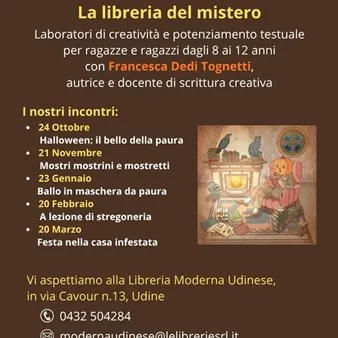

sab 24 ott · dalle 10:00
La libreria del mistero - “Halloween: il bello della paura”
Fantasmi, mostri, case infestate, porte proibite e misteri da svelare. Ma soprattutto storie capaci di far correre un brivido lungo la schiena e, nello stesso tempo, accendere la fantasia. In vista di Halloween, la Libreria Moderna Udinese si prepara a trasformarsi in un luogo…
 Indicazioni
Indicazioni
- Costi e prenotazioni
- Costo non indicato · Prenotazione non indicata
- Programma
- Programma da verificare. Apri la fonte ufficiale per orari e possibili aggiornamenti.
- In caso di maltempo
- Nessuna indicazione specifica pubblicata.
- Note
- Acquisito automaticamente dalla fonte.
L’EVENTO
Descrizione completa
Fantasmi, mostri, case infestate, porte proibite e misteri da svelare. Ma soprattutto storie capaci di far correre un brivido lungo la schiena e, nello stesso tempo, accendere la fantasia. In vista di Halloween, la Libreria Moderna Udinese si prepara a trasformarsi in un luogo dove giocare con la paura, le parole e l'immaginazione.
Sabato 24 ottobre alle 10 prende infatti il via “La libreria del mistero”, un ciclo di cinque laboratori di creatività e potenziamento testuale rivolti a bambine e bambini dagli 8 ai 12 anni, condotti da Francesca Dedi Tognetti, autrice e docente di scrittura creativa.
Il primo appuntamento, intitolato “Halloween: il bello della paura”, accompagnerà i partecipanti alla scoperta di quel particolare piacere che si prova leggendo racconti di fantasmi, leggende e storie misteriose. Un brivido che nasce dall'immaginazione e dalla capacità delle parole di creare suspense, attesa e sorpresa, anche quando ci si trova al sicuro.
Attraverso giochi di scrittura, invenzione e lettura, i giovani partecipanti esploreranno i meccanismi delle storie che fanno paura: dal mostro al mistero, dal non detto ai luoghi inquietanti, fino ai cambiamenti di prospettiva e ai colpi di scena.
Per informazioni e prenotazioni:
tel. 0432 504284
e-mail: modernaudinese@lelibreriesrl.it
IL PROGRAMMA
Programma e orari
Appuntamenti raccolti dalle fonti elencate. Dove manca un orario, non è ancora disponibile in questa scheda.
Programma pubblicato
- Dal 2026-10-24 al 2026-10-24
INFORMAZIONI UTILI
Prima di partire
- Controllare la fonte prima di partire.
ORGANIZZAZIONE